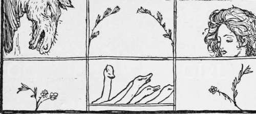

The Goose Girl
Description
This section is from the book "Household Tales by Brothers Grimm", by Brothers Grimm. Also available from Amazon: Household Tales by Brothers Grimm.
The Goose Girl
The king of a great land died, and left his queen to take care of their only child. This child was a daughter, who was very beautiful; and her mother loved her dearly, and was very kind to her. And there was a good fairy too, who was fond of the princess, and helped her mother to watch over her. When she grew up, she was betrothed to a prince who lived a great way off; and as the time drew near for her to be married, she got ready to set off on her journey to his country. Then the queen, her mother, packed up a great many costly things ; jewels, and gold, and silver; trinkets, fine dresses, and in short everything that became a royal bride. And she gave her a waiting-maid to ride with her, and give her into the bridegroom's hands; and each had a horse for the journey. Now the princess's horse was the fairy's gift, and it was called Falada, and could speak.
When the time came for them to set out, the fairy went into her bed-chamber, and took a little knife, and cut off a lock of her hair, and gave it to the princess, and said, "Take care of it, dear child ; for it is a charm that may be of use to you on the road." Then they all took a sorrowful leave of the princess; and she put the lock of hair into her bosom, got upon her horse, and set off on her journey to her bridegroom's kingdom.
One day, as they were riding along by a brook, the princess began to feel very thirsty; and she said to her maid, " Pray get down, and fetch me some water in my golden cup out of yonder brook, for I want to drink." "Nay," said the maid, "if you are thirsty, get off yourself, and stoop down by the water and drink; I shall not be your waiting-maid any longer." Then she was so thirsty that she got down, and knelt over the little brook, and drank; for she was frightened, and dared not bring out her golden cup; and she wept and said, " Alas ! what will become of me ?" And the lock answered her, and said—
"Alas, alas! if thy mother knew it,
Sadly, sadly, would she rue it."
But the princess was very gentle and meek, so she said nothing to her maid's ill behaviour, but got upon her horse again.
Then all rode further on their journey, till the day grew so warm, and the sun so scorching, that the bride began to feel very thirsty again ; and at last, when they came to a river, she forgot her maid's rude speech, and said, "Pray get down, and fetch me some water to drink in my golden cup." But the maid answered her, and even spoke more haughtily than before: " Drink if you will, but I shall not be your waiting-maid." Then the princess was so thirsty that she got off her horse, and lay down, and held her head over the running stream, and cried and said, "What will become of me ?" And the lock of hair answered her again—
"Alas, alas! if thy mother knew it,
Sadly, sadly, would she rue it."
And as she leaned down to drink the lock of hair fell from her bosom, and floated away with the water. Now she was so frightened that she did not see it; but her maid saw it, and was very glad, for she knew the charm; and she saw that the poor bride would be in her power, now that she had lost the hair. So when the bride had done drinking, and would have got upon Falada again, the maid said, " I shall ride upon Falada, and you may have my horse instead": so she was forced to give up her horse, and soon afterwards to take off her royal clothes and put on her maid's shabby ones.
At last, as they drew near the end of their journey, this treacherous servant threatened to kill her mistress if she ever told any one what had happened. But Falada saw it all, and marked it well.
Then the waiting-maid got upon Falada, and the real bride rode upon the other horse, and they went on in this way till at last they came to the royal court. There was great joy at their coming, aud the prince flew to meet them, and lifted the maid from her horse, thinking she was the one who was to be his wife; and she was led upstairs to the royal chamber; but the true princess was told to stay in the court below.
Now the old king happened just then to have nothing else to do; so he amused himself by sitting at his kitchen-window, looking at what was going on; and he saw her in the courtyard. As she looked very pretty, and too delicate for a waiting-maid, he went up into the royal chamber to ask the bride who it was she had brought with her, that was thus left standing in the court below.
"I brought her with me for the sake of her company on the road," said she ; " pray give the girl some work to do, that she may not be idle." The old king could not for some time think of any work for her to do; but at last he said, "I have a lad who takes care of my geese; she may go and help him." Now the name of this lad, that the real bride was to help in watching the king's geese, was Curdken.
But the false bride said to the prince, "Dear husband, pray do me one piece of kindness." "That I will," said the prince. "Then tell one of your slaughterers to cut off the head of the horse I rode upon, for it was very unruly, and plagued me sadly on the road"; but the truth was, she was very much afraid lest Falada should some day or other speak, and tell all she had done to the princess. She carried her point, and the faithful Falada was killed ; but when the true princess heard of it, she wept, and begged the man to nail up Falada's head against a large dark gate of the city, through which she had to pass every morning and evening, that there she might still see him sometimes. Then the slaughterer said he would do as she wished; and cut off the head, and nailed it up under the dark gate.
Early the next morning, as she and Curdken went out through the gate, she said sorrowfully—
"Falada, falada, there thou hangest!" and the head answered—
"Bride, bride there thou gangest!
Alas, alas! if thy mother knew it,
Continue to:
Tags
fairy tales, children's stories, brothers grimm, household tales